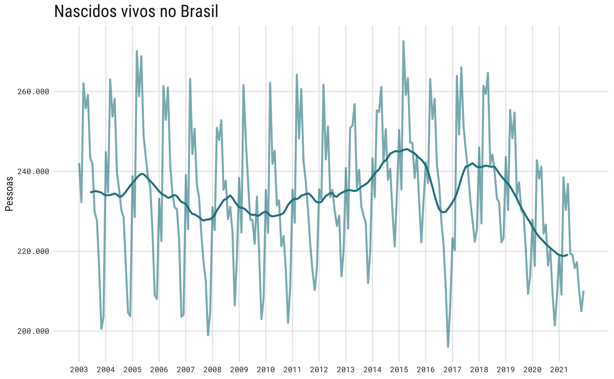
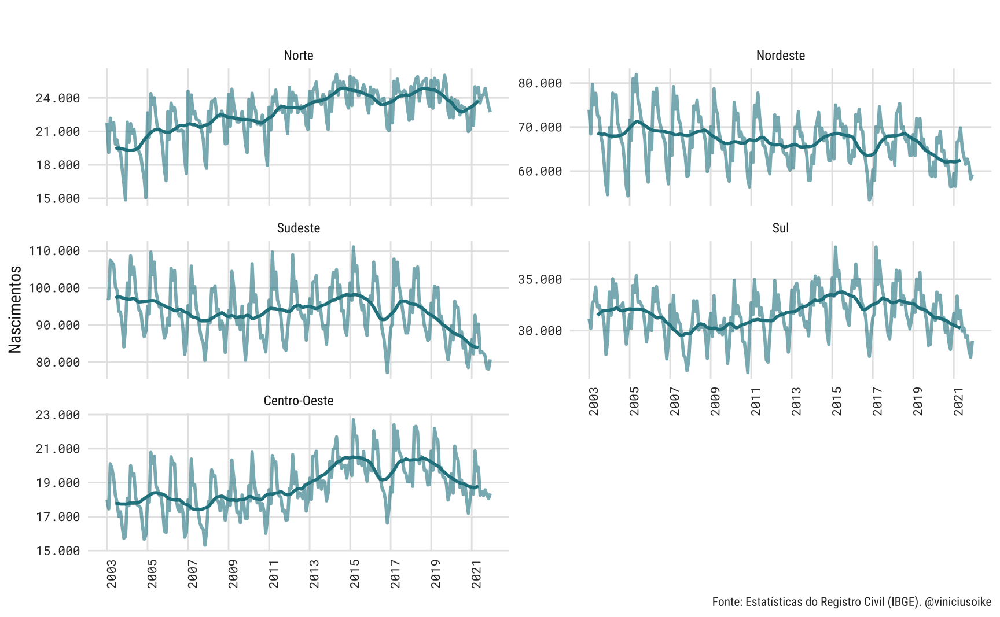
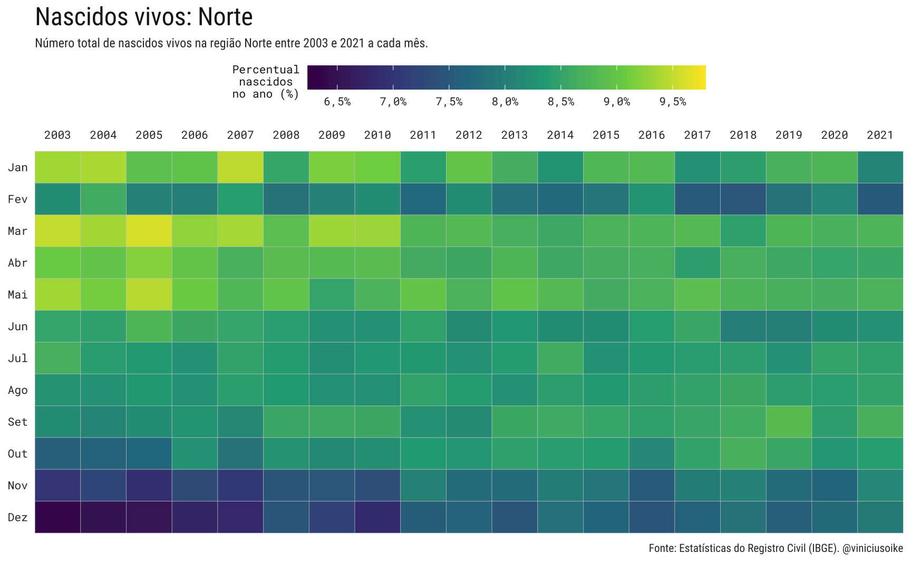
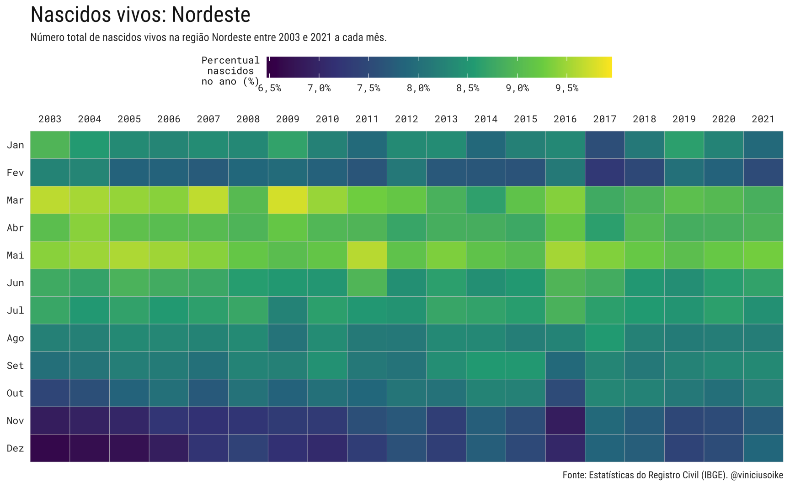
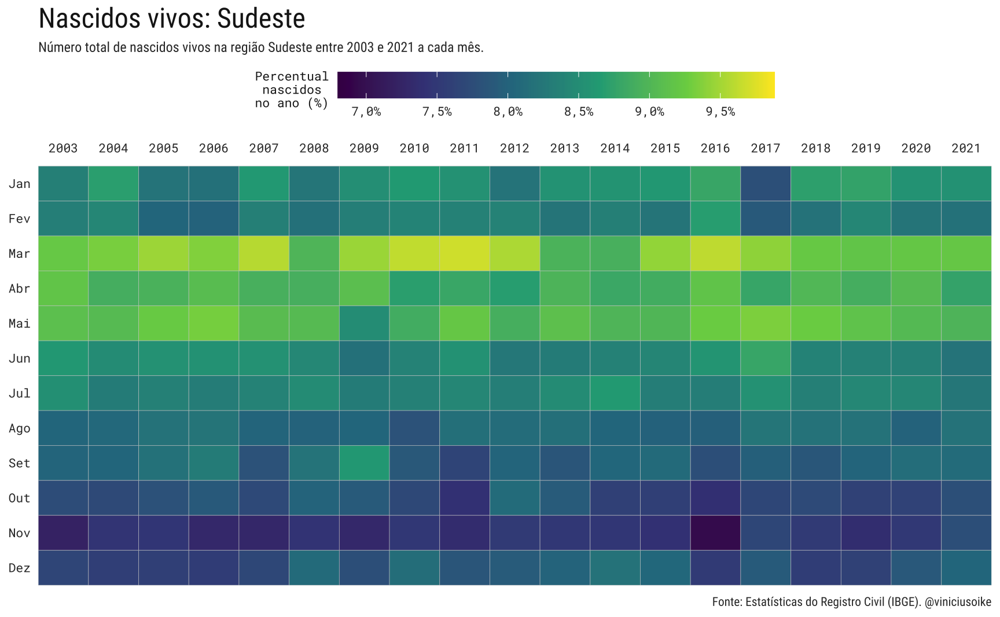
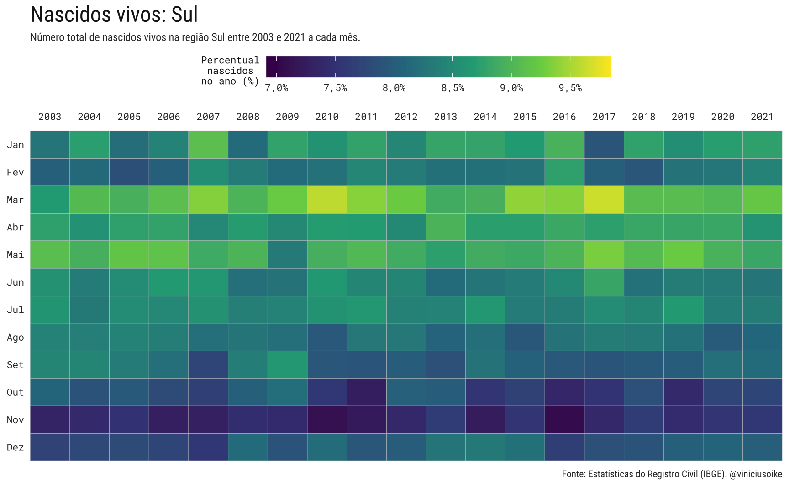
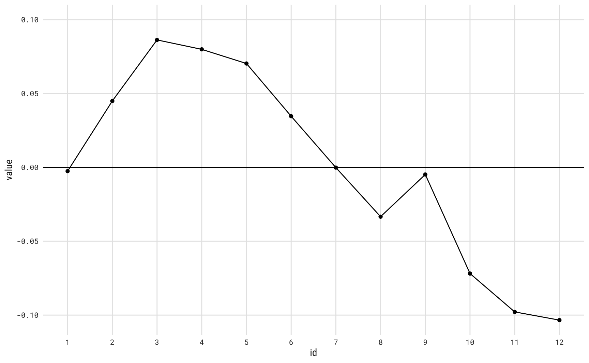
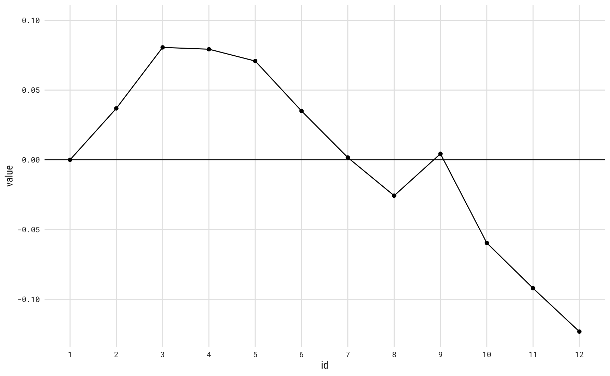

Nascimentos no Brasil
Tende-se a pensar que a data de nascimento de um indivíduo é algo completamente aleatório. Afinal, ninguém escolhe precisamente quando vai nascer. Alguns atribuem significado profundo à data de nascimento: a depender do horário, dia e mês a pessoa terá tendências a ser mais de uma forma do que outra. Nascer no mês impróprio pode ser um mal negócio para a vida toda.
Já na cultura popular é comum especular que os nascimentos seguem alguns ciclos da vida. As estações do ano regulam as safras de comida, a temperatura, a disposição para sair de casa e, muito acreditam, o desejo sexual. Os feriados, as festividades, o carnaval, as vitórias no campeonato de futebol, tudo isso - imagina-se - tem algum efeito sobre a natalidade no país, nove meses no futuro.
No campo da economia, pode-se especular que os ciclos de crescimento econômico e, sobretudo, os ciclos de desemprego devem ter algum efeito sobre os nascimentos.
O mês de nascimento
Usando dados do IBGE, mais especificamente das Estatísticas do Registro Civil, pode-se calcular o número total de nascimentos em cada mês desde 2003. Grosso modo, nos últimos vinte anos, março, abril e maio foram os três meses com maior número de nascimentos (27,23%). Já os meses do final do ano, outubro, novembro e dezembro foram os meses com menor número de nascimentos (22,95%).
Isto significa que o maior número de concepções ocorreu no inverno, nos meses de julho a agosto. Já os meses quentes de janeiro a março tiveram os menores números de concepções. Este fato vai diretamente contra a popular percepção de que épocas quentes favorecem o número de nascimentos.
Olhando para as tendências de médio e longo prazo, vê-se que o número de nascimentos no Brasil permaneceu relativamente estável entre 2000 e 2015, variando de 230 mil a 242 mil nascimentos por mês. A quebra na série coincide com a recessão de 2015-17, período de alta inflação e desemprego recorde: de fato, a série sai do seu pico, acima de 265 mil nascimentos para o seu ponto mais baixo, abaixo de 200 mil nascimentos, neste período.
O fim da recessão não significou, contudo, um retorno à antiga tendência. Desde 2018-19, o número de nascidos vivos no Brasil segue em tendência de queda.

Regiões
A tendência geral, observada no Brasil, repete-se em quase todas as grandes regiões. Apenas a região Norte parece escapar da tendência de queda, ainda que os valores correntes estejam levemente abaixo dos valores observados em 2013-14.

Visualmente, o padrão sazonal dos nascimentos nas regiões é muito similar ao padrão geral brasileiro. Novamente, a região norte é uma exceção, já que a proporção de nascimentos em cada mês é muito homogênea.




Sazonalidade
E, afinal, há sazonalidade nos nascimentos no Brasil? Visualmente, parece haver fortes indícios de sazonalidade. Uma maneira simples de simultaneamente testar e mensurar o efeito sazonal é via uma regressão linear. Supondo um modelo simples da forma1:
\[ B_{t} = T_{t}S_{t}E_{t} \]
onde \(B_{t}\) é o número ajustado de nascimentos mensais2, \(T_{t}\) é o termo de tendência, \(S_{t}\) é o termo sazonal e \(E_{t}\) é o termo de resíduo. Aplicando logaritmo natural, temos um modelo aditivo. Para modelar a tendência vamos utilizar o mesmo filtro linear utilizado nos gráficos acima, isto é, uma média móvel 2x12 centrada3. Esta estimativa é descontada da série original para chegar num valor sem tendência. Por fim, vamos supor dummies sazonais da forma:
\[ b_{t} = \alpha_{0} + \sum_{i = 2}^{12}\beta_{i}\delta_{i} + u_{t} \]
onde \(b_{t}\) agora é o logartimo natural da série de nascimentos livre de tendência. O parâmetro \(\alpha_{0}\) é uma constante e \(\delta_{i}\) é uma variável binária que indica com valor unitário se a observação pertence ao mês \(i\).
A tabela abaixo mostra o resultado da regressão. Assim, como se viu nos gráficos, os três meses do final do ano tem um efeito negativo enquanto os meses de março a maio têm um efeito positivo sobre o número de nascimentos. Além destes, fevereiro e junho aparecem com sinal positivo, mas tem um efeito menor. Agosto também tem um efeito negativo, porém com magnitude inferior aos meses do final do ano.
Code
library(gtsummary)
library(gt)
library(gtExtras)
tbl_brazil <- tbl_brazil |>
mutate(
days = lubridate::days_in_month(date),
births_adjusted = total * (365/12) / days
)
nasc <- ts(log(tbl_brazil$births_adjusted), start = c(2003, 1), frequency = 12)
mm <- stats::filter(nasc, filter = rep(1/12, 12), method = "convolution")
mm <- stats::filter(mm, filter = c(1/2, 1/2), method = "convolution")
nasc_mm <- nasc - mm
fit_lm <- tslm(nasc_mm ~ season)
tab_reg <-
tbl_regression(
fit_lm,
estimate_fun = ~style_sigfig(.x, digits = 3)
) %>%
bold_labels() %>%
bold_p() %>%
as_gt() %>%
gt_theme_538()
tab_reg| Characteristic | Beta | 95% CI1 | p-value |
|---|---|---|---|
| season | |||
| 1 | — | — | |
| 2 | 0.048 | <0.001 | |
| 3 | 0.089 | <0.001 | |
| 4 | 0.082 | <0.001 | |
| 5 | 0.073 | <0.001 | |
| 6 | 0.037 | <0.001 | |
| 7 | 0.002 | 0.7 | |
| 8 | -0.031 | <0.001 | |
| 9 | -0.002 | 0.7 | |
| 10 | -0.069 | <0.001 | |
| 11 | -0.095 | <0.001 | |
| 12 | -0.101 | <0.001 | |
| 1 CI = Confidence Interval | |||
Visualmente, o resultado da regressão acima pode ser visto no painel abaixo. Note que o padrão sazonal é constante: começa o ano subindo, atinge um pico e aí começa a cair.

O painel abaixo mostra a decomposição completa da série de nascimentos.
Um exercício semelhante poderia ser feito analisando cada estado individualmente. Os dados de nascimentos por UF funcionam como um painel longitudinal e pode-se fazer um regressão com efeitos fixos. Por completude, faço este exercício, mas como se vê no gráfico final, o padrão sazonal é muito similar. Em verdade, os efeitos de UF parecem ter ligeiramente intensificado o efeito sazonal.

Footnotes
Este é um modelo bastente convencional em séries de tempo, também conhecido, modelo “clássico” ou “decomposição clássica”. Veja, por exemplo Morettin, P & Toloi, C. Análise de Séries Temporais (2006).↩︎
Becker (1989) sugere corrigir o número de nascimentos pelo número de dias no mês da seguinte maneira: \(\tilde{x}_{t} = x_{t}\frac{365}{12z}\) onde \(z\) é o número de dias do mês.↩︎
Isto é equivalente a fazer primeiro uma média móvel de dozes meses e depois uma média móvel de dois meses. Na prática, todos os termos têm peso 1/12, exceto pelo primeiro e último que têm peso 1/24.↩︎